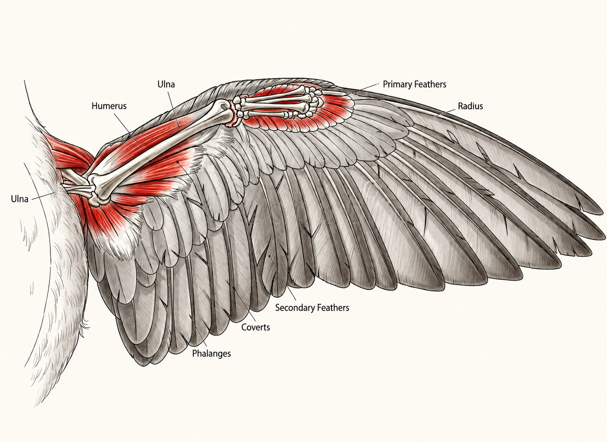
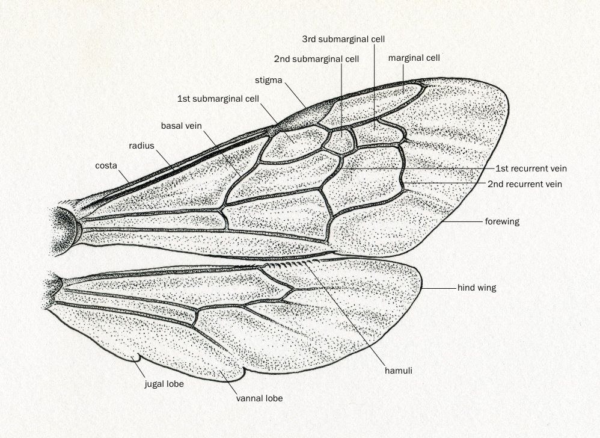
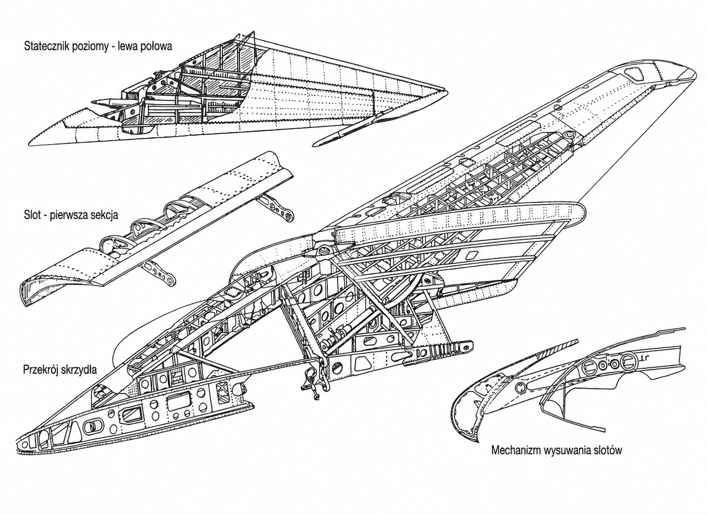

Zwierzęta posiadające skrzydła
Najbardziej oczywistymi posiadaczami skrzydeł są ptaki, które używają ich do latania, choć niektóre gatunki, jak pingwiny, strusie, nandu, kazuary, kiwi i emu, są nielotami, mimo że mają skrzydła
Nietoperze to jedyni ssaki zdolni do aktywnego lotu, posiadające skrzydła będące zmodyfikowanymi kończynami przednimi
Owady mogą mieć jedną lub dwie pary skrzydeł, co umożliwia im poruszanie się w powietrzu
Maszyny i konstrukcje
Skrzydła występują także w samolotach, np. w konstrukcjach braci Wright, oraz w wiatrakach, młynach zbożowych i pompach wodnych, które wykorzystują ruch skrzydeł do wytwarzania energii lub napędu mechanicznego
Symbolika skrzydle
W kulturze i religii skrzydła mają bogate znaczenie. W starożytnym Egipcie symbolizowały boskość i ochronę, w mitologii greckiej były związane z bogiem Hermem, a w chrześcijaństwie kojarzone są z aniołami jako wysłannikami Boga
Skrzydła symbolizują wolność, niezależność, duchowość, ochronę, siłę i transcendencję, a także możliwość osiągania celów i marzeń
W sztuce i tatuażach często wyrażają odwagę, przewodnictwo duchowe lub zwycięstwo
Podsumowanie
Skrzydła występują zarówno w świecie przyrody, jak i w technologii, a także pełnią funkcję symboliczną w kulturze i religii. Mogą oznaczać lot, wolność, ochronę, siłę i duchowość, a ich obecność w różnych kontekstach odzwierciedla zarówno praktyczne, jak i metaforyczne znaczenie.
alae avis
U ptaków skrzydłem jest przekształcona pierwsza para kończyn. Szkielet skrzydła ptaka składa się z kości ramieniowej (humerus), dwóch zrośniętych ze sobą kości przedramienia (kość łokciowa (ulna) i kość promieniowa (radius)), dwóch kostek powstałych ze zrośnięcia kości pierwszego szeregu nadgarstka oraz kości nadgarstkowo-dłoniowej (carpus-metacarpus). Kość nadgarstkowo-dłoniowa składa się z kolei z dwu wydłużonych i zrośniętych ze sobą na obu końcach kości nadgarstka, tworząc trzy palce z czego środkowy jest dwuczłonowy, a pozostałe dwa skrajne są jednoczłonowe.

alae insecti
Skrzydełka owadów to istotne elementy ich budowy, które odgrywają kluczową rolę w ich funkcji lotu. Owoce owadów mają dwie pary skrzydeł, które są wzmocnione żyłkami i pokryte włoskami lub łuskami. U niektórych gatunków skrzydełka mogą być przekształcone w przezmianki, co jest charakterystyczne dla ich systematyki. W przypadku owadów bezskrzydłych, skrzydełka nie występują w ogóle.

alae aeroplanum
Skrzydło, zwane również płatem nośnym, jest odpowiedzialne za generowanie siły nośnej, która pozwala samolotowi unosić się w powietrzu. W przekroju skrzydło ma kształt profilu lotniczego, który różni się krzywizną górnej i dolnej powierzchni – górna jest zwykle bardziej wypukła, co przyspiesza przepływ powietrza i tworzy różnicę ciśnień, generując siłę unoszącą. Na krawędzi skrzydła znajdują się lotki i często klapy lub sloty, które zwiększają siłę nośną i umożliwiają sterowanie maszyną podczas lotu.
